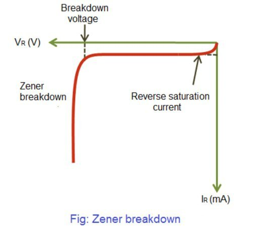

A Zener diode is a reverse biased p-n junction diode.
Zener diodes are the basic building blocks of electronic circuits.
They are widely used in electronic equipments.
They protect electronic circuits from over (or) excess voltage
When Forward biased voltage is applied to zener diode it works like a normal p-n junction diode.
When reverse biased voltage is applied to a zener diode ,it allows only a small amount of leakage current until the voltage is less than zener voltage.When applied voltage to the zener diode reaches the zener voltage,it starts allowing diode reaches the zener voltage, it starts allowing large amount of electric current.At this point a small increase in reverse voltage will rapidly increase in reverse voltage will rapidly increase the electric current called zener current.
Because of this sudden rise in electric current,breakdown occurs which is called as zener breakdown. The zener breakdown voltage dependent on the amount of doping.If the diode is heavily doped,zener breakdown occurs at low reverse voltages.If it is lightly doped,the zener breakdown occurs at high reverse voltages.